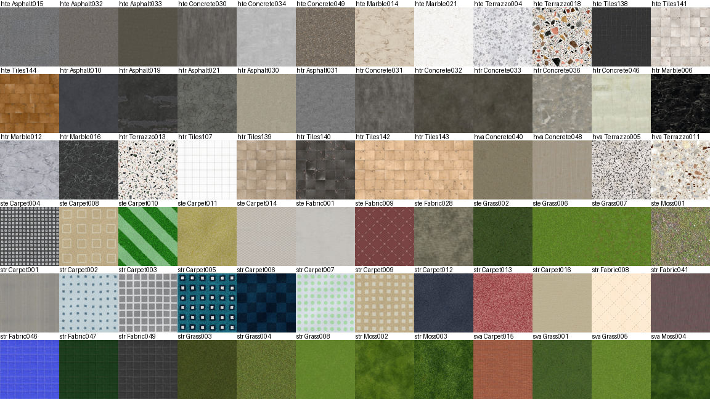

A dataset for seeing the floor before the step
The Booster K1 walks over hard and soft floors in MuJoCo. A torso camera looks steeply down at one fixed patch of floor just ahead of the feet on every frame; the sole and the joints feel the floor after each step. This page describes how the camera and the patch were chosen, why the robot's shadow was switched off, which textures were used, and how the data are split.
In short
- 400 episodes, 16,918 steps, one gait. G113, an ordinary flat-foot walking policy, on two floor classes: hard and soft. 241 episodes were replayed from the step-1 data and all 241 came out bit-identical.
- One fixed patch per frame. The image rectangle [171, 66, 253, 140], about 0.3 × 0.3 m of floor centred 0.45 m ahead of the trunk. The robot's own body enters it in 0.68 % of frames.
- No shadows. With shadows on, the robot's shadow covered more than a tenth of the patch in 31.2 % of pilot frames, so they were switched off.
- 72 CC0 textures, 25 held out for test. No texture image is in two splits, and every episode keeps the split it had in the step-1 data.
- Deceptive looks. 85 test episodes are also rendered with the texture of the other class: hard that looks soft, soft that looks hard. They are 21.0 % of all steps and never used in training.
What the data are for
The question of this experiment is whether a vision model can learn the floor class from the sole's labels and name it before the foot lands. That needs, for every footstep, what the camera saw before the step and what the sole and the joints felt during it. To keep the task narrow, there is one gait, two floor classes and one fixed patch of floor that a model classifies on every frame. The results are on the fixed-patch results page.
- Floors. Hard is the rigid, grippy floor of the step-1 data; soft is its soft floor. A third episode type, the strip, starts on a hard centre and walks out onto a soft surround, so the floor changes under the robot.
- Gait. G113 only.
- Sole. The coarse sole features of the stance foot: four pressure blocks, four shear vectors, centre of pressure, total force and contact-area ratio. Joints and IMU as stored in the step-1 data, with its noise.
Camera and patch: the pilot
The camera is fixed to the trunk at the mount of the first vision experiment: 0.09 m forward and 0.18 m up from the trunk origin, about 0.72 m above the floor while walking. Its intrinsics are like those of a RealSense D455: 424 × 240 px, vertical field of view 58°, fx = fy = 216.5 px, 10 frames per second.
A pilot on 5 training rollouts (two hard, two soft, one strip; commanded 0.26 to 0.42 m/s) tried 7 pitches from 55° to 72.5° and patch distances from 0.20 to 0.80 m in steps of 0.0125 m, with a segmentation pass on every frame to find robot pixels. The rule: the leading toe should be at the bottom of the image in at least half of the frames, and the median floor visible ahead of the leading toe should be 0.6 to 0.85 m; then take the nearest patch.

| Patch distance from the trunk | Robot pixels in the patch, all speeds | At 0.40 m/s or faster |
|---|---|---|
| 0.4375 m (what the pilot rule picked) | 3.2 % | 8.2 % |
| 0.45 m (used) | 0.45 % | 2.1 % |
| 0.45 m, final dataset, 80,000 frames | 0.68 % | 2.25 % |
Reading the table. The first two rows come from a robustness check on 50 other saved rollouts. At the distance the pilot rule chose, the robot's own leg entered the patch in 8.2 % of frames at higher speed. Moving the patch slightly further out cut that to 2.1 %, so 0.45 m was used. In the final dataset the share is 0.05 % below 0.30 m/s, 0.38 % at 0.30 to 0.40 m/s and 2.25 % at 0.40 m/s or more. Nothing is masked; the robot share is stored per frame.
The chosen camera and patch
- Pitch 67.5° down from the trunk's horizontal. With the walking lean, the optical axis is 65.8 / 68.5 / 70.0° below horizontal (5th / 50th / 95th percentile over all rendered frames).
- Framing. The leading toe is in the bottom quarter of the image in 73 % of frames, the trailing toe at the bottom edge, and floor is visible to about 0.80 m (median) ahead of the leading toe.
- Patch. The image rectangle [171, 66, 253, 140], 82 × 74 px: the projection of a 0.3 × 0.3 m square of floor centred 0.45 m ahead of the trunk origin in the median walking pose. That is about 250 to 270 px per metre.
| Ground footprint of the patch, 80,000 frames | 5th pct | Median | 95th pct |
|---|---|---|---|
| Centre, ahead of the trunk origin (m) | 0.429 | 0.452 | 0.496 |
| Centre, sideways (m) | −0.050 | −0.007 | +0.036 |
| Near edge, ahead (m) | 0.283 | 0.300 | 0.334 |
| Near edge, width (m) | 0.276 | 0.283 | 0.290 |
| Far edge, ahead (m) | 0.575 | 0.603 | 0.657 |
| Far edge, width (m) | 0.314 | 0.325 | 0.341 |
| Area (m²) | 0.086 | 0.092 | 0.102 |
Reading the table. The patch stays put on the floor to within a few centimetres as the body sways: its centre moves 1.6 cm closer per degree the camera pitches down. In the pilot, the patch centre lay about 0.29 m ahead of the leading toe (0.23 to 0.36 m). This is why vision in this experiment sees the next floor one or two steps before the foot reaches it.
Shadows removed
The pilot frames showed the robot's shadow falling on the patch for some walking directions, because the sun is fixed in the world. Measured on the 5 pilot episodes with the light of the first vision experiment:
- the shadow covered more than 10 % of the patch in 31.2 % of frames, and more than 1 % in 40.0 %;
- the mean shadowed share was 6.5 %;
- it depended on the heading: 0 % in 3 episodes, 60 % and 96 % in the other two.
A shadow that follows the robot is a cue that has nothing to do with the floor, and it would differ between walking directions. The scene light was therefore set to cast no shadows, so no shadow can fall on the patch and no shadow flag is needed.
Textures and looks
72 CC0 photo textures from ambientCG (1K colour maps, 512 × 512): 36 hard (concrete, asphalt, tiles, marble, terrazzo) and 36 soft (carpet, grass, moss, and fabric limited to quilted, fleece, felt and terry cloth). The class follows the material: what a person would call that floor. A visual review then dropped foam (crumpled packaging, not a floor), plain flat-colour fabrics (they look like painted concrete) and one board-formed concrete that looks like planks.

| Textures | Test | Validation | Train |
|---|---|---|---|
| Hard | 13 | 4 | 19 |
| Soft | 12 | 4 | 20 |
Reading the table. The split is per class and stratified by material, with validation taken out of the training textures. Training episodes use training textures only, validation episodes validation textures only, test episodes test textures only. No image is in two splits (checked by hash). Test textures are new images of material families also seen in training: new textures, not new materials.
The independent re-check notes that validation has no asphalt, fabric, marble or tiles texture, and only 8 textures in all.
Looks
- Honest. Each region shows a texture of its own class. The two regions of a strip get different textures.
- Deceptive (deceptive floor: looks like one class, behaves like the other). Each region of a deceptive test episode shows a test texture of the other class. These episodes are rendered in both looks, paired: same walk, same sole signal, only the picture differs.

Episodes, steps and splits
400 G113 walking episodes from the step-1 data. 159 were saved rollouts and were copied; 241 were replayed deterministically, and every stored array was compared bit for bit: 241 of 241 identical, none dropped. Every episode keeps its step-1 split. All validation and test episodes of these classes are included; training is a fixed random subset.
| Episodes | Train | Validation | Test | Test, deceptive |
|---|---|---|---|---|
| Hard | 98 | 24 | 14 | 34 |
| Soft | 98 | 24 | 14 | 34 |
| Strip, hard to soft | 30 | 6 | 7 | 17 |
| Steps, hard / soft | 5,174 / 4,404 | 1,265 / 1,046 | 789 / 681 | 1,872 / 1,687 |
Reading the table. The deceptive column holds test episodes shown with the other class's look; their steps are counted by the real floor, so 1,872 are hard floors that look soft and 1,687 soft floors that look hard, 3,559 in all, 21.0 % of the 16,918 steps. The fixed-patch results use the 35 honest test episodes plus the honest look of the 85 deceptive ones as the main test set.
- A step is a touchdown before any fall with a stance window (touchdown to lift-off, at most 0.6 s) of at least 5 frames at 50 Hz. 978 shorter touch-and-go contacts were dropped.
- The last camera frame before touchdown is 0.02 / 0.06 / 0.10 s earlier (5th / 50th / 95th percentile). Every kept step has one.
- Frames that saw the landing spot. For training, each step is linked to the earlier frames whose patch contains its landing point: 0 / 7 / 13 frames per step. 91.0 % of steps have at least one; the rest are steps the patch never covered, such as first steps and turns.
- Speed is binned by mean commanded forward speed: below 0.30, 0.30 to 0.40, and 0.40 m/s or more.
- Strips go one way. Every strip episode starts on the hard centre and walks onto soft floor. A few turn and cross back, but at the level of steps all boundaries in this dataset are hard to soft.
What is stored
- Per frame (10 Hz): trunk and camera pose, the patch's footprint on the floor, the true class at its centre and the soft share of the footprint (strip frames can straddle the boundary), the class the floor looks like, robot pixels in the patch, the patch RGB crop and its depth in millimetres (noise-free; a D455-like noise model can be applied). Full frames at 5 Hz for clips.
- Per step: episode, split, look, speed, side, touch-down time, landing pose, the class of the touched region, the class it looks like, friction and stiffness, the last frame before touchdown, and the windows of sole features and of joints and IMU (22 joint positions, 22 joint velocities, gyro and gravity vector).
- Size: 3.2 GB, 97,000 frames (400 main looks plus 85 paired honest looks).
Checks and limits
- Sole sanity, noise-free. 36 episodes (3 per class and split) were replayed again, all bit-identical. Standing weight was within 2 % of m·g in all 59 static windows (largest error 0.10 %), and force was zero whenever the sole had no floor contact (1,302 phases, largest value 0).
- Independent re-check. It confirmed the 400 episodes and 16,918 steps, that no episode is in two splits, the texture counts per split with no duplicate images, the hashes of the test lists, and the patch rectangle. In 20 sampled frames the robot covered at most 0.1 % of the patch and no shadow was visible. Details on the re-check page.
- No shadows, one camera pose, no lighting change. Easier than a real camera.
- Textures on a flat plane. A texture has no depth, gloss or give; real carpet and real tile differ in more than a picture.
- One gait and one direction of floor change (hard to soft).
This page describes data, not scores; the results pages report macro-F1 per step on held-out textures. Related: fixed-patch results, teachers of experiment 2, re-check of experiment 2, dataset of the six-class experiment. Textures: ambientCG, CC0.